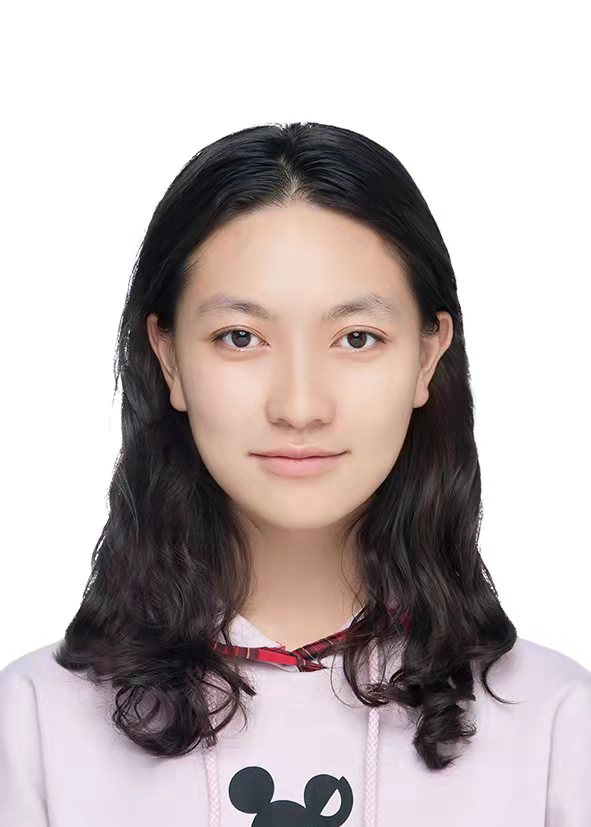

Jiqin Feng(封霁芩)
Ph.D. Candidate · Machine Learning
EN Ph.D. candidate in computer vision & multimodal learning, with a focus on data quality and intelligent systems. Research spans traditional vision (food segmentation & counting), hyperspectral analysis (Chinese herb feature engineering), foundation models (multimodal alignment), and data quality (active learning). Engineering experience includes food DB backend, interactive annotation tools, dataset construction pipelines, and efficient labeling modules. Bridging algorithm research with end-to-end engineering practice.
CN 博士研究生，研究方向聚焦计算机视觉与多模态学习，关注数据质量与智能系统开发。科研涵盖传统视觉任务（食品通用分割与计数）、高光谱数据分析（中药材特征工程）、视觉基础模型（多模态对齐）、数据质量评估（主动学习采样）；系统开发包括食物数据库后端、交互式分割标注工具、高质量数据集构建系统、高效数据标注模块。致力于算法研究与工程实践的全链路优化。
News
Education
Ph.D. Candidate in Computer Science
University of Science and Technology of China, China
Advised by Prof. Xiang-Yang Li.
B.Eng. in Computer Science
University of Science and Technology of China, China
Selected in Hua Xia Talent Program in Computer Science and Technology.
Experience
Algorithm Intern
Hangzhou Shifang Technology Co., Ltd. · Algorithm Department
Independently developed a Flask-based food database management backend for Danone collaboration, and built an interactive segmentation annotation tool. Led algorithm design for multi-scenario food recognition tasks including tray counting, segmentation, and plastic occlusion detection. Conducted pre-research on hyperspectral food quality analysis and herb authentication.
Research Intern
China Telecom Artificaial Intelligece Technology (Beijing) Co., Ltd. · Visual Understanding R&D Center
Investigated long-text alignment for plug-in SAM3 visual foundation models, designed four modular optimization strategies for referring expression comprehension and segmentation, and conducted ablation studies on RefCOCO+ to identify the optimal configuration.
中国科学技术大学
中国科学技术大学
中国科学技术大学
中国科学技术大学
中国科学技术大学
中国科学技术大学 · 2023 秋季学期
中国科学技术大学
中国科学技术大学
全国赛
中国科学技术大学
中国科学技术大学
Research Interests
Computer Vision
Image segmentation, object counting, and visual understanding across diverse scenarios including food analysis, hyperspectral imaging, and interactive annotation systems.
Reinforcement Learning
Exploring RL-driven strategies for data quality assessment, active learning sampling optimization, and intelligent decision-making in visual model training pipelines.